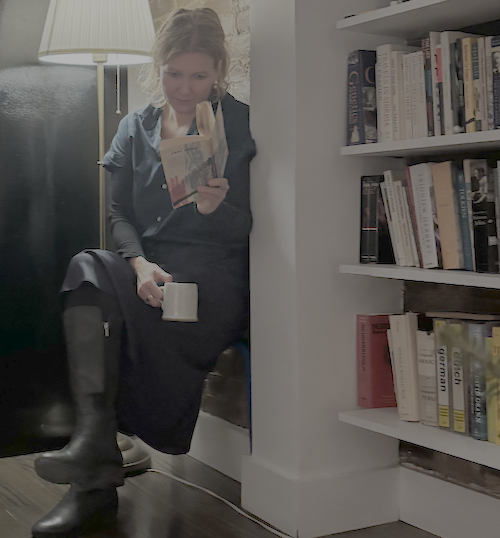

molly larrison: notes on ai, tech, and being human.
home. the plex. nibbles. poems. projects. about.

"The question of what makes a philosopher a philosopher, and what makes a poet a poet, is one I have stopped asking."
I'm a writer and strategist in NYC, dedicated to precise documentation and creative expression. In a world that often feels chaotic, I look for structure, whether in the architecture of a digital archive or the rhythm of a stanza.
My career has been spent in high-velocity environments, helping teams find clarity in the noise. But the work is also personal: I'm driven by the human condition, why we do what we do and how we record it.
Outside of work, life is a balance of co-parenting a teenager, learning Japanese, and slowly restoring a 19th-century schoolhouse.